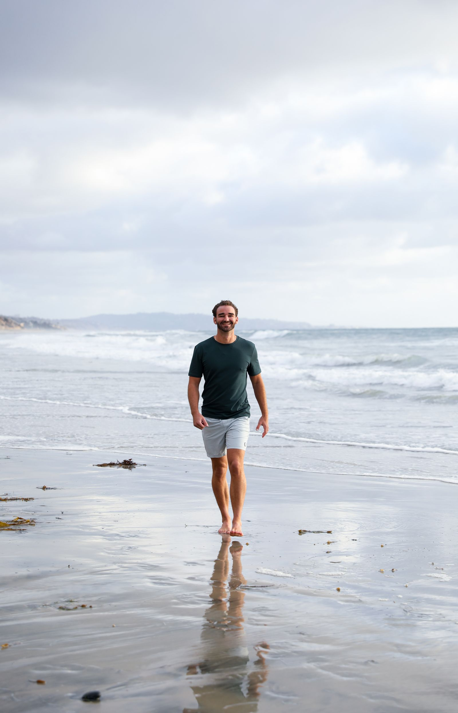
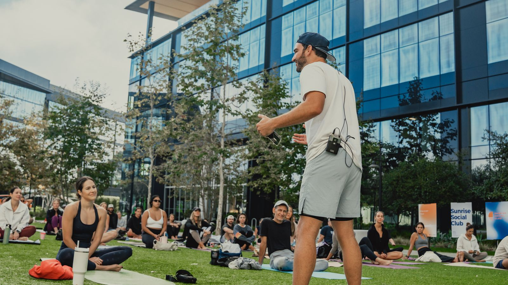
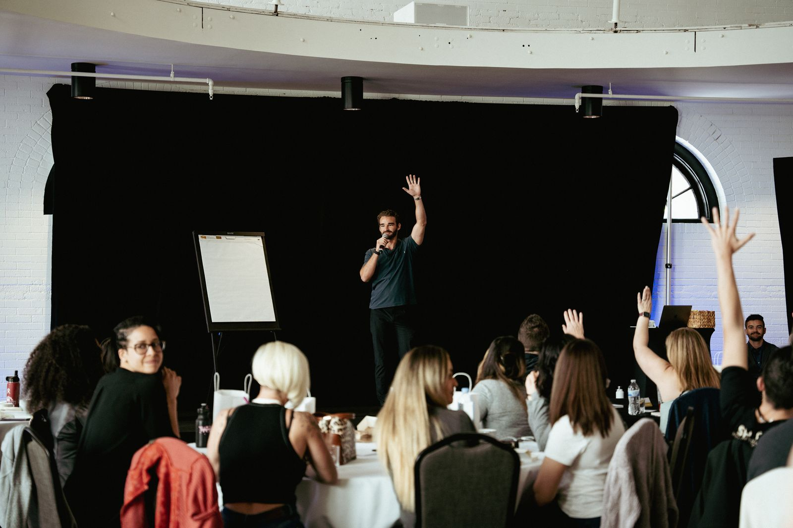
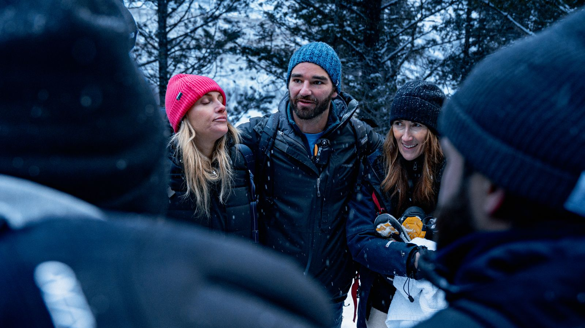
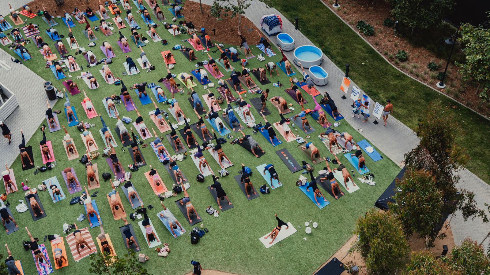
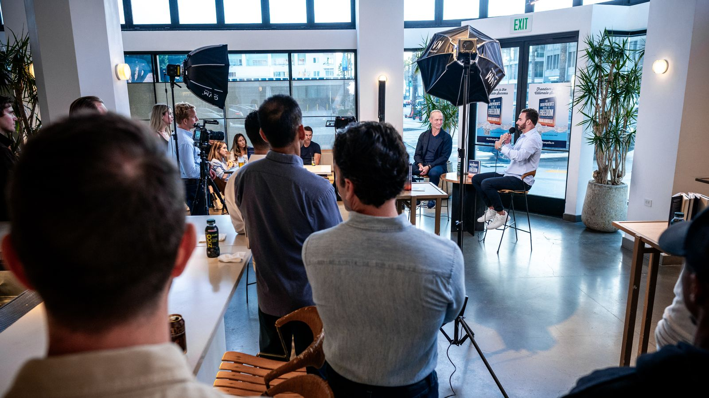
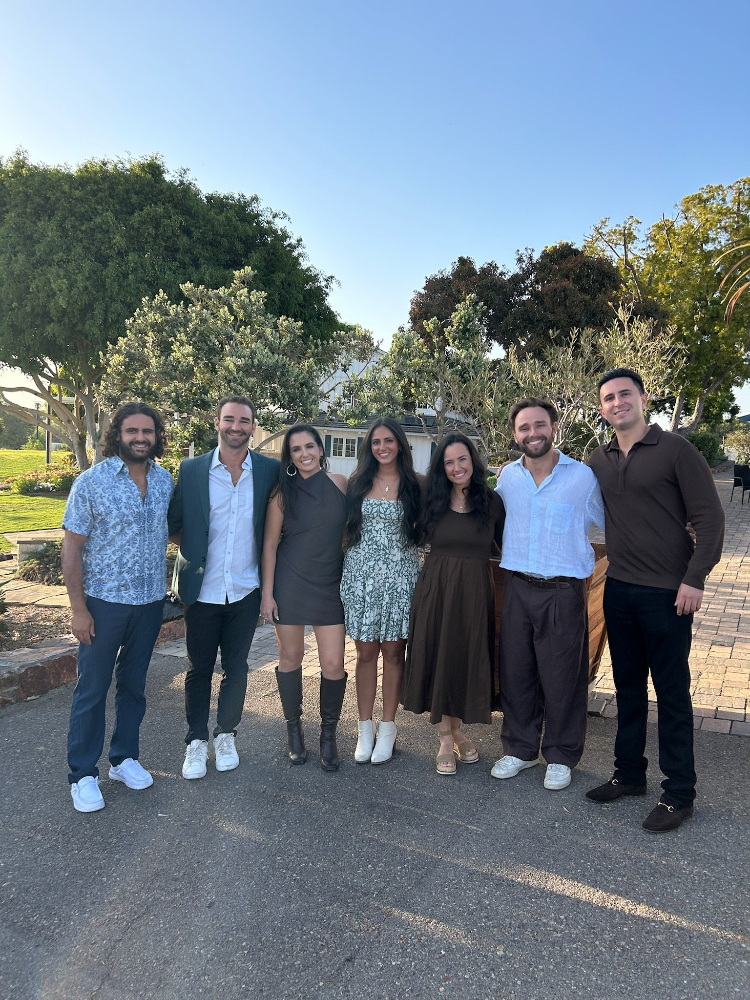

I followed cosmic breadcrumbs instead of a plan. Here's where they led.
Hi, my name is Joshua.
I'm a Moroccan-American Jewish kid from San Diego with the last name Church. I grew up around kitchen tables where the conversation always came back to the same question: How do we build something that actually helps people?
That question has been the through line of my entire life. It just keeps showing up in different forms.
When I was seventeen, a doctor looked at my beat-up body—years of injuries, surgeries, chronic pain—and told me to pick up golf. That I wasn't built for anything more. I didn't listen. Not because I'm stubborn (okay, maybe a little), but because something deeper in me knew there was more. I just didn't have the language for it yet.
So I followed the breadcrumbs instead of the plan.


I got obsessed with the human body. Cold exposure, breathwork, Wim Hof—anything that could give me relief from the pain I was in. As I found relief, I also stumbled into discovering the intelligence we already carry inside us. That obsession led me to co-found Edge Theory Labs, a cold plunge company that grew to over $20 million in under three years. Forbes put me on the 30 Under 30 list. I crossed the finish line of a full Ironman Triathlon. I stood on stages I never imagined standing on, shaking hands and doing business with celebrities and athletes I looked up to my whole life.
But here's the thing no one tells you about building a rocket ship: sometimes you have to step off to figure out why you got on in the first place.

What I discovered was that the work was never really about cold plunges. It was about helping people access a part of themselves they'd been ignoring. The intuition. The signal beneath the noise. The quiet knowing that says this is the next step—even when the spreadsheet disagrees.
I wrote a book about that entire journey. It's called Cosmic Breadcrumbs: Building a Profitable Partnership with The Universe—a story about what happens when you stop trying to control life and start collaborating with it.
These days, I'm building at the intersection of human intelligence and artificial intelligence. I co-founded Trust The Process, an AI consulting agency where we pair human strategy with cutting-edge AI to help businesses work smarter, faster, and with more clarity. I believe AI is the most powerful tool of our generation—and that the humans who learn to work with it will build things we can't even imagine yet.


I host a podcast called Find The Others—where I share my own reflections from living life on purpose, and have conversations with people who are living on their own terms, following their own breadcrumbs, and building lives that look nothing like the template.
And I co-founded Coastal Tribe with my cousins—a Jewish community in San Diego for young professionals to connect with their roots and celebrate their identity. Through Shabbat dinners, holiday gatherings, wellness events, and other get-togethers, we've hosted thousands of people and counting.
Because I've learned the hard way that none of this works alone. The biggest breakthroughs of my life didn't come from a book or a business plan. They came from being in the right room with the right people at the right time. Friendpower is stronger than willpower. Every time.


If you asked me what I actually do, the honest answer is this: I help people and businesses tap into their full intelligence—human, artificial, and collective. Sometimes that looks like leading a group into icy rivers in Iceland. Sometimes it looks like hosting a Shabbat dinner that turns strangers into family. Sometimes it looks like an AI agent transforming how a company operates. Sometimes it looks like a conversation on a podcast that changes how someone sees their life.